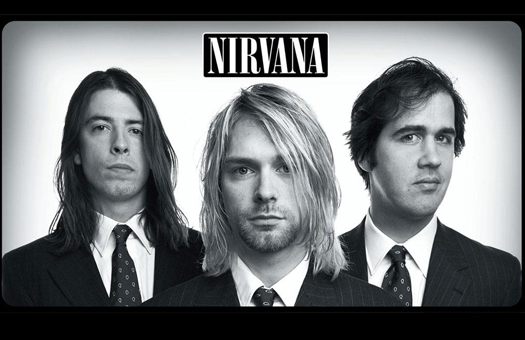

NIRVANA
Nirvana — американская рок-группа, созданная вокалистом и гитаристом Куртом Кобейном и басистом Кристом Новоселичем в Абердине, штат Вашингтон, в 1987 году. В составе коллектива сменились несколько барабанщиков; дольше всех с группой играл ударник Дэйв Грол, присоединившийся к Кобейну и Новоселичу в 1990 году. В 1989 году Nirvana стала частью сиэтлской музыкальной сцены, выпустив на инди-лейбле Sub Pop дебютный альбом Bleach. После подписания контракта с крупным лейблом DGC Records Nirvana приобрела неожиданный успех с песней «Smells Like Teen Spirit» из своего второго альбома Nevermind, выпущенного в 1991 году. Впоследствии Nirvana вошла в музыкальный мейнстрим, популяризовав поджанр альтернативного рока, названный гранжем. Курт Кобейн оказался в глазах СМИ не просто музыкантом, а «голосом поколения», а Nirvana стала флагманом «поколения Х». В 1993 году вышел третий и последний студийный альбом группы, In Utero, композиции которого в музыкальном плане сильно отличались от предыдущих работ коллектива.

Мнение о группе:
Стивен Томас Эрлевайн, музыкальный критик сайта Allmusic.com, писал, что до Nirvana «альтернативная музыка не воспринималась всерьёз крупными звукозаписывающими компаниями». После выпуска Nevermind «всё поменялось, непонятно, к худшему или к лучшему». Успех Nevermind не только сделал гранж популярным, но и показал «культурный и коммерческий потенциал альтернативного рока в целом». У других групп были хиты и раньше, но, по словам Эрлевайна, именно Nirvana «навсегда сломала барьеры» между миром альтернативного рока и популярной музыки. Эрлевайн также отмечает, что прорыв Nirvana «не уничтожил андеграунд», а «приоткрыл его» для слушателей. В 1992 году Джон Парелес, журналист The New York Times, писал, что после прорыва Nirvana звукозаписывающие компании заинтересовались группами, играющими альтернативную музыку. Представители компаний заключали с ними сделки и пытались быстро достичь мейнстрима. Эрлевайн утверждает, что прорыв Nirvana «популяризовал так называемое Поколение X и культуру бездельников». Сразу же после смерти Кобейна о фронтмене Nirvana заговорили как о «голосе поколения», хотя он сам при жизни отрицал этот ярлык. Через десять лет после смерти Кобейна Эрик Олсен с новостного канала MSNBC писал: «За прошедшее десятилетие Кобейн, маленький, хилый, но привлекательный мужчина по жизни, стал абстрактной иконой Поколения X, на которую многие смотрят, как на последнюю настоящую рок-звезду […] мессия и мученик, каждое высказывание которого было растащено и анализировано». Многие музыкальные группы и исполнители не раз утверждали, что Nirvana оказала большое влияние на их творчество и на их решение начать заниматься музыкой. Среди них Limp Bizkit, Джаред Лето из 30 Seconds to Mars, Seether, Flyleaf и другие. Тим Ритчи, музыкальный директор Radio National, сравнивая творчество Sex Pistols и Nirvana (тем самым сравнивая кульминации панк-движения и гранж-движения соответственно), писал, что «влияние Nirvana намного больше Sex Pistols», так как Nirvana не просто оказала воздействие на музыкантов, она повлияла на весь мейнстрим в целом. Крейг Метьесон, автор двух книг о подъёме австралийской инди-сцены в 90-е годы, писал (как и Эрлевайн), что главная заслуга Nirvana состоит в том, что она убрала барьеры между корпоративными лейблами и инди-музыкой. В декабре 2019 года статистика видеоролика на Youtube с клипом «Smells Like Teen Spirit» превысила 1 млрд. просмотров за десять лет. Клип был снят в 1991 году и опубликован на ресурсе в 2009 году.